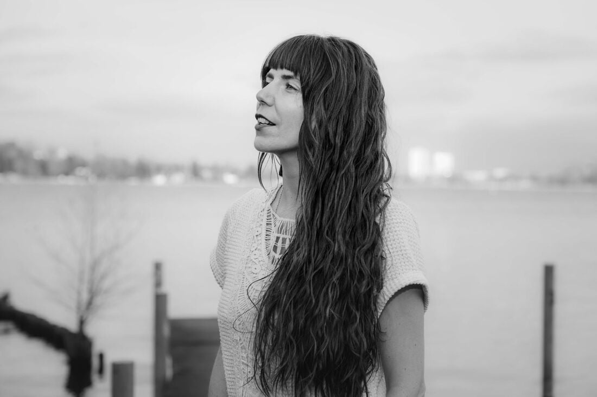

<main id="main" class="page">
  <div class="container container--narrow">
    <picture>
      <source type="image/webp"
              srcset="assets/images/band-photo-04-400.webp 400w, assets/images/band-photo-04-800.webp 800w, assets/images/band-photo-04-1100.webp 1100w"
              sizes="(max-width: 768px) 90vw, 720px">
      
    </picture>

    <h1 class="page__title">About</h1>

    <p>With a name inspired by exclamatory motifs from a foxy Wes Anderson film, Wild Animal was established to explore themes of being wild in a domestic world. It is our hypothesis that wilderness can be found again, within. Even in the confines of a culture and society which is by its very nature taming. Musically, the guiding principle is to create relatable pop rock music that is nonetheless complex and substantial.</p>

    <p>As people, we are <strong>Marie and John Therrien</strong>. A multinational married couple living in Berlin, seeking new ways of embodying spirit which appreciate the beauty of nature, play and visceral as well as contemplative experiences. We hope to bring harmony into this world. Seeking the right balance of consonance and dissonance to move the song.</p>

    <h2>Band Biography</h2>

    <p>Wild Animal was formed in 2016 and took off touring. With little to no budget, the first demos were recorded at home in New Orleans, and a tour of the US was planned with the help of a successful kickstarter campaign which bought a school bus for conversion into a tour RV. Over 16,000 kilometers were traveled, and 40+ shows played over two months. With the goal of honing studio skills, John then got a job first as an intern, and eventually as an audio engineer/producer at Music Shed Studios learning from and working with multiple Grammy winning Jack Miele. At Music Shed, the first self-titled studio album was born. Following the personally important opportunity to move to Berlin, John made arrangements to follow up Self-titled with the talented band members Andrew Church and David Gilman before departure. This became impossible when Corona stranded them in southern Louisiana. Thus Acoustic was born. The world had stopped and the studio was empty, so John went everyday, and put together an album alone. Soon after completion, in early 2020 the move to Berlin was made, and Wild Animal's fate was uncertain. However, upon meeting Marie, and playing/writing music together the band found a new life, and Magisches Theater started taking form in late 2022. It was completed in late 2023, and released on July 5th 2024. Late 2024 and early 2025 saw the recording of the latest self-titled album which thematically approaches childhood by keeping the songs relatively short and simple, and asking questions of what's going on with being alive in this society and time.</p>

    <p>Before Wild Animal, John found resonance as frontman of Yancellor Chang, a band formed at U.C.S.B. Yance won a battle of the bands, winning a spot at the Extravaganza festival in 2014. The press from this allowed the band to immediately attract local attention, and fostered a favorable run which lasted until the band broke up when the members graduated in 2015.</p>

    <p>Marie began her musical journey at the age of 18, lending her voice to a local soul and funk band named "Soulfightazz" in Brandenburg/Germany. Though her professional focus shifted to theater and eventually to becoming a meditation teacher, music remained an integral part of her life.</p>

    <p><small>Fotos: <a href="https://www.ejafoto.com">www.ejafoto.com</a></small></p>
  </div>
</main>
